★ ROCK ★ FESTIVAL ★ ROCK ★ FESTIVAL ★ ROCK ★ FESTIVAL ★ ROCK ★ FESTIVAL ★ ROCK ★FESTIVAL ★ ROCK ★ FESTIVAL ★ ROCK ★ FESTIVAL ★ ROCK ★ FESTIVAL ★ ROCK ★
O FESTIVAL
UMA NOITE INESQUECIVEL DECADAS DE ROCK
O Rock Antique Festival reune algumas das maiores bandas do planeta e da historia do rock. Um encontro de geracoes, estilos e decadas diferentes, celebrando a historia do ROCKKKKK.
★ ROCK ★ FESTIVAL ★ ROCK ★ FESTIVAL ★ ROCK ★ FESTIVAL ★ ROCK ★ FESTIVAL ★ ROCK ★FESTIVAL ★ ROCK ★ FESTIVAL ★ ROCK ★ FESTIVAL ★ ROCK ★ FESTIVAL ★ ROCK ★
LINE-UP
CONFIRA AS LENDAS DO SHOW

THE BEATLES
FROM LIVERPOOL
Os Beatles foram uma lendária banda de rock britânica formada em Liverpool em 1960. Composta por John Lennon, Paul McCartney, George Harrison e Ringo Starr, o grupo revolucionou a música, a moda e a cultura pop global na década de 1960. Conhecidos como os "Fab Four", protagonizaram o fenômeno da "Beatlemania" e são amplamente considerados a banda mais influente e bem-sucedida da história da música popular.

FLEETWOOD MAC
FROM LONDON
O Fleetwood Mac é uma lendária banda de rock anglo-americana famosa por transformar dramas e divórcios reais em obras-primas da música. O grupo começou no blues nos anos 60 e atingiu o estrelato mundial nos anos 70 com um som soft rock sofisticado, marcado pelas vozes de Stevie Nicks e Christine McVie. Seu álbum icônico, Rumours (1977), tornou-se um dos mais vendidos da história.

THE SMITHS
FROM MANCHESTER
The Smiths foi uma icônica banda britânica de rock alternativo dos anos 1980, famosa por unir as guitarras melódicas de Johnny Marr às letras melancólicas e irônicas do vocalista Morrissey.

PINK FLOYD
FROM LONDON
O Pink Floyd foi uma lendária banda britânica de rock progressivo e psicodélico fundada em 1965, mundialmente famosa por suas composições filosóficas, experimentações sonoras e álbuns conceituais icônicos como The Dark Side of the Moon e The Wall.

THE DOORS
FROM LOS ANGELES
The Doors foi uma das bandas mais influentes do rock psicodélico dos anos 1960, famosa por fundir poesia poética, blues, jazz e rock com uma sonoridade única marcada pelo uso do órgão Vox Continental e pela ausência de um baixista fixo. Liderado pelo carismático e controverso vocalista Jim Morrison, o grupo marcou a história da música com letras sombrias, performances teatrais e clássicos imortais como "Light My Fire", "Riders on the Storm" e "The End".

SOUNDGARDEN
FROM SEATTLE
O Soundgarden foi uma influente banda de rock norte-americana formada em 1984 em Seattle, Washington. O grupo é amplamente reconhecido como um dos pioneiros e pilares do movimento grunge e do rock alternativo, combinando a peso do heavy metal e do hard rock com a atitude do punk rock.

FOOFIGHTERS
FROM SEATTLE
O Foo Fighters é uma influente banda de rock americana formada em 1994 pelo ex-baterista do Nirvana, Dave Grohl. O grupo é mundialmente conhecido por seu estilo rock alternativo, post-grunge e hard rock, combinando melodias marcantes com guitarras pesadas e vocais enérgicos.

LED ZEPPELIN
FROM LONDON
O Led Zeppelin foi uma lendária banda britânica de rock formada em 1968, amplamente considerada uma das mais influentes e inovadoras da história da música. Unindo blues pesado, folk e hard rock, o quarteto composto por Jimmy Page, Robert Plant, John Paul Jones e John Bonham moldou o surgimento do heavy metal e vendeu centenas de milhões de discos com clássicos atemporais como "Stairway to Heaven".

KING CRIMSON
FROM LONDON
O King Crimson é uma influente banda britânica de rock progressivo fundada em 1968 por Robert Fripp. O grupo é amplamente reconhecido por redefinir o gênero com o álbum de estreia In the Court of the Crimson King (1969) e por sua constante evolução musical, que mistura jazz, música clássica, metal e elementos eletrônicos experimentais.
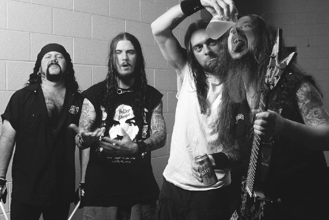
PANTERA
FROM TEXAS
Fundada pelos irmãos Vinnie Paul e Dimebag Darrell, o Pantera começou a sua carreira tocando glam metal dos anos 80. A banda mudou radicalmente de estilo após a entrada do vocalista Phil Anselmo. Eles deixaram o visual colorido para trás e criaram um som muito mais agressivo, tornando-se os pioneiros e a maior referência do groove metal na década de 1990 com álbuns icônicos como Cowboys from Hell e Vulgar Display of Power.
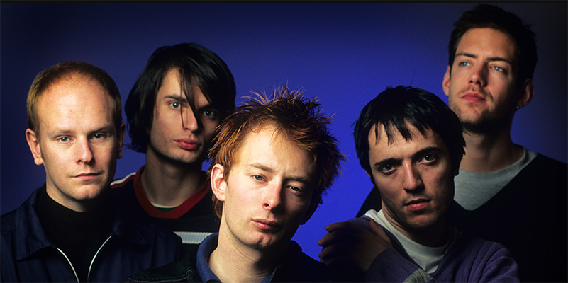
RADIOHEAD
FROM OXFORDSHIRE
O Radiohead é conhecido por revolucionar a música popular ao misturar guitarras com texturas eletrônicas e experimentações complexas. Liderada por Thom Yorke, a banda se consagrou nos anos 90 com o álbum OK Computer e, desde então, é um símbolo de inovação constante, abordando temas de alienação moderna e política de forma profundamente melancólica e artística.
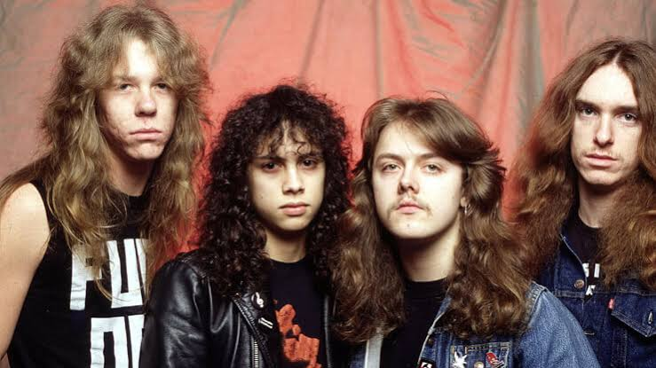
METALLICA
FROM LOS ANGELES
Fundado pelo baterista Lars Ulrich e pelo vocalista e guitarrista James Hetfield, o Metallica é o principal pioneiro do thrash metal. Com riffs rápidos, agressivos e composições complexas, a banda revolucionou o metal nos anos 1980 e alcançou o estrelato mundial com o lançamento do "Black Album" em 1991, tornando-se um fenômeno de vendas e lotando estádios até hoje.
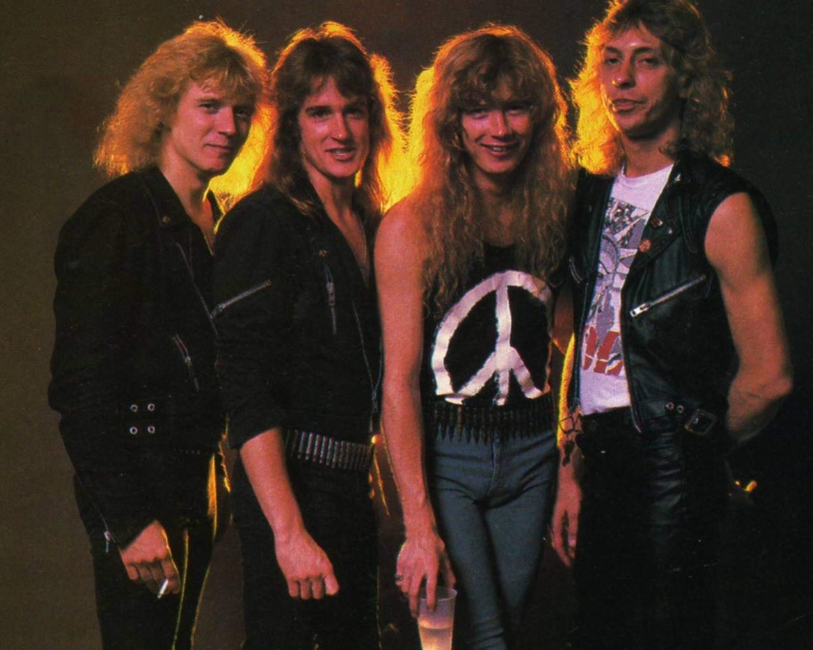
MEGADETH
FROM LONDON
Fundada pelo guitarrista e vocalista Dave Mustaine após sua saída do Metallica, o Megadeth é pioneiro do thrash metal americano e faz parte do "Big Four" do gênero. A banda é mundialmente famosa por suas guitarras extremamente rápidas, solos complexos, letras com temas políticos/sociais e pelo icônico mascote Vic Rattlehead.
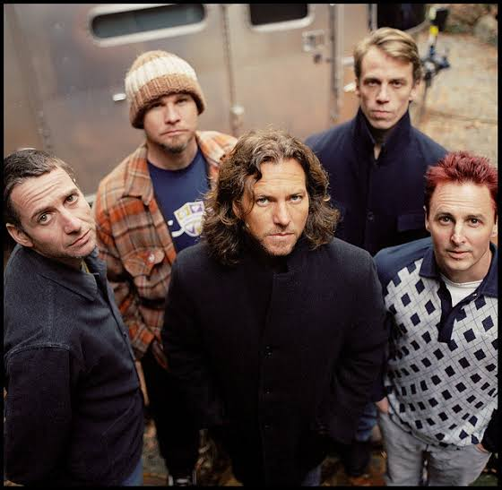
PEARL JAM
FROM SEATTLE
Nascido no estouro do movimento grunge dos anos 90, o Pearl Jam conquistou o mundo logo com seu álbum de estreia, Ten. A banda é famosa pelas letras profundas e a voz marcante do vocalista Eddie Vedder. Ao contrário de outros grupos da época, eles sobreviveram ao tempo e continuam na ativa, conhecidos por seus shows enérgicos e forte ativismo político e social.
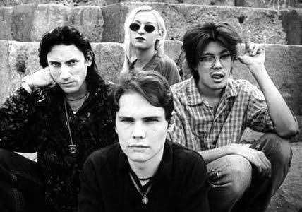
SMASHING PUMPKINS
FROM CHICAGO
Liderada por Billy Corgan, a banda estourou nos anos 90 misturando guitarras pesadas e distorcidas com melodias melancólicas e arranjos grandiosos. Diferente de outras bandas de sua geração, eles uniam o peso do grunge à sensibilidade do pop e do rock progressivo, criando clássicos icônicos como 1979 e Bullet with Butterfly Wings.
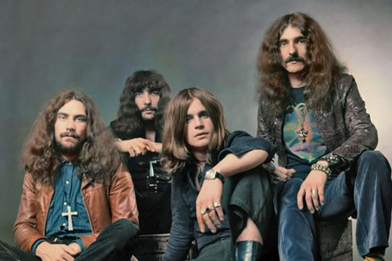
BLACK SABBATH
FROM BIRMINGHAN
Liderada pela voz marcante de Ozzy Osbourne e pelos riffs pesados e sombrios de Tony Iommi, a banda definiu as bases do heavy metal. Suas letras sobre ocultismo, terror e críticas sociais, combinadas com uma sonoridade lenta e densa, influenciaram gerações inteiras de músicos e criaram a identidade do rock pesado mundial.
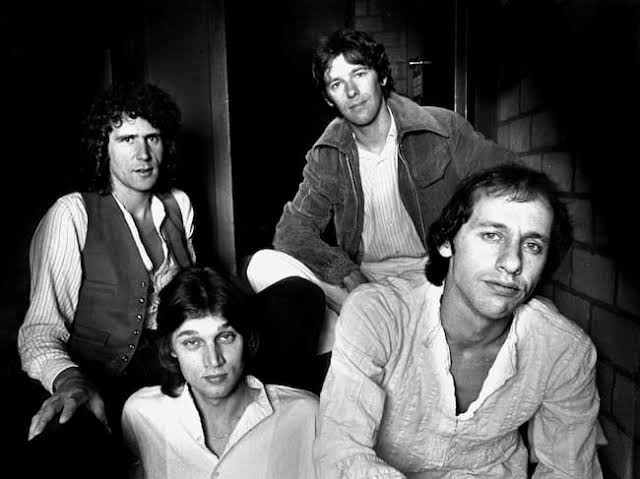
DIRE STRAITS
FROM LONDON
Liderada pelo guitarrista e vocalista Mark Knopfler, a banda se destacou por um som melancólico, solos de guitarra limpos e dedilhados (sem palheta) e uma forte influência do blues, country e folk. Eles se tornaram um dos maiores fenômenos comerciais do mundo, impulsionados por megahits como "Sultans of Swing" e "Money for Nothing", antes de encerrarem as atividades definitivamente nos anos 1990.
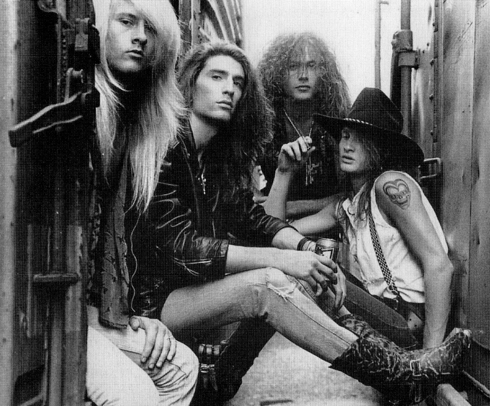
ALICE IN CHAINS
FROM SEATTLE
O Alice in Chains ganhou fama mundial nos anos 1990 com o movimento grunge. A banda se diferencia das demais pelo seu som pesado, sombrio e, principalmente, pelas harmonias vocais marcantes e melancólicas. Apesar da trágica morte do vocalista original, Layne Staley, em 2002, o grupo retornou anos depois com William DuVall e continua na ativa.
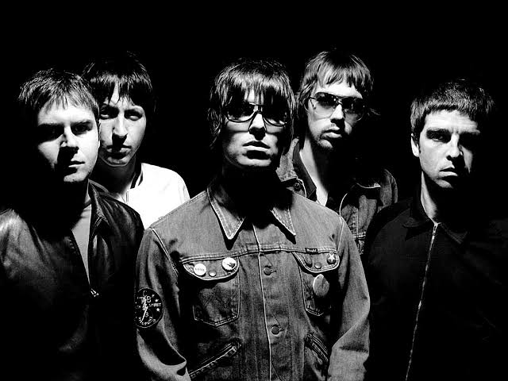
OASIS
FROM MANCHESTER
Liderada pelos irmãos Liam e Noel Gallagher, o Oasis se tornou o maior fenômeno do Britpop nos anos 90, unindo melodias inspiradas nos Beatles com a atitude rebelde do rock clássico. Eles dominaram as paradas mundiais com hinos geracionais como "Wonderwall" e "Don't Look Back in Anger" até se separarem em 2009 devido às brigas constantes entre os irmãos.
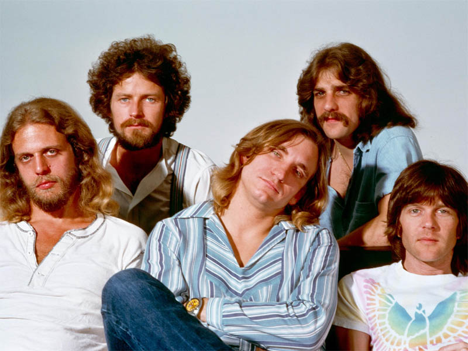
EAGLES
FROM LOS ANGELES
A banda nasceu na cena musical da Califórnia e rapidamente se tornou um fenômeno comercial, simbolizando o som do rock americano dos anos 70. Eles emplacaram mega-hits globais como "Take It Easy" e a lendária "Hotel California", além de possuírem um dos álbuns mais vendidos de todos os tempos (Their Greatest Hits).
★ ROCK ★ FESTIVAL ★ ROCK ★ FESTIVAL ★ ROCK ★ FESTIVAL ★ ROCK ★ FESTIVAL ★ ROCK ★FESTIVAL ★ ROCK ★ FESTIVAL ★ ROCK ★ FESTIVAL ★ ROCK ★ FESTIVAL ★ ROCK ★
ESTRUTURA
TUDO PREPARADO PARA A NOITE DO ROCK

PALCO ANTIQUE
Palco principal do festival, preparado para receber as grandes lendas do rock durante toda a noite.

ALIMENTAÇÃO
Área com comidas, lanches e bebidas para o público durante todo o festival.

CONFORT GRASS
Um espaço mais tranquilo para descansar entre as ou nas apresentações.

EXPOSIÇÃO OLD CARROS
Para quem e fa de um bom carrao veio e estiloso.

PRIMEIROS SOCORROS
Espaço preparado para atendimento durante todo o evento.

SETORES
Os setores do show.
★ ROCK ★ FESTIVAL ★ ROCK ★ FESTIVAL ★ ROCK ★ FESTIVAL ★ ROCK ★ FESTIVAL ★ ROCK ★FESTIVAL ★ ROCK ★ FESTIVAL ★ ROCK ★ FESTIVAL ★ ROCK ★ FESTIVAL ★ ROCK ★
INGRESSOS
GARANTA SEUS INGRESSOS AGORA MESMO
COMPRE JA
INGRESSO GERAL
O ingresso geral te permite ter acesso a todos os shows e locais do festival.
R$ 1850
QUANTIDADE
★ ROCK ★ FESTIVAL ★ ROCK ★ FESTIVAL ★ ROCK ★ FESTIVAL ★ ROCK ★ FESTIVAL ★ ROCK ★FESTIVAL ★ ROCK ★ FESTIVAL ★ ROCK ★ FESTIVAL ★ ROCK ★ FESTIVAL ★ ROCK ★
CONTATO
FALE COM O ROCK ANTIQUE FEST
Dúvidas, informações ou assuntos relacionados ao festival? Entre em contato com a nossa equipe.
contato@rockantiquefest.com
TELEFONE
(41) 99999-1980
LOCAL
Estádio Couto Pereira
Curitiba - PR